Talents
Every commander talent.
Talents are permanent upgrades for your commander. There are 36 of them, shared out among the builds of the 4 commanders. Each talent level offers 2 talents and you keep one of them. The one you pass up is gone for the match.
How talents are chosen
- Your commander joins you in the preparation phase of round 10. The build you pick with the commander decides which talents you are offered.
- A talent choice opens when your player level reaches 4, 6, 8 and 10: 4 choices in a match at most.
- The choice appears during the preparation phase, at the start of the phase or the moment you buy the experience that takes you to the level. It never opens during combat.
- Choices come one at a time, lowest level first. If you already passed several talent levels when the commander arrived, you choose for each of them in turn.
- If a choice is still open when combat begins, the first option (option A in the tables below) is taken for you.
- A talent you have taken cannot be changed or refunded, and it works in every fight from then on.
- The builds of Vey, Brugg, Pip and Fizzwick are offered the same talents at every talent level except level 10. There each build has a talent of its own that upgrades the ability only that build has.
Levels and experience are explained on Levels and experience, commanders and builds on How commanders work.
Kinds of talent
| Kind | Talents | What it does |
|---|---|---|
| Ability upgrade | 13 | Replaces one of the commander's abilities with a stronger form. |
| New ability | 4 | Adds one more ability, with its own cooldown. |
| Commander bonus | 10 | Raises the commander's own stats for the whole fight. |
| Crew bonus | 8 | Raises the stats of every unit on your side for the whole fight. |
| Triggered effect | 1 | Adds an effect that fires on its own, such as an extra summon at the start of combat. |
Talent ladders
Pick a commander to see only that commander's ladders.
 Vey the Pactbinder
Vey the Pactbinder
Thrall Binder
Marks the weakest enemy for the whole crew to break. Abilities:  Blood Offering
Blood Offering Thrall Mark
Thrall Mark
| Player level | Option A | Option B |
|---|---|---|
| 4 |  Hardened Hide Vey gains 300 maximum health. | 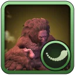 Second Retainer A second Pact Archer joins Vey at the start of combat. |
| 6 |  Deep Offering Blood Offering heals 50% more and its blessing lasts 8 seconds. |  Infernal Boost Every ally deals 8% more damage. |
| 8 |  Searing Torment Vey also casts Searing Torment. |  Pain Ward Vey takes 15% less damage and gains 20% magic resistance. |
| 10 |  Binding Mark Thrall Mark lasts 9 seconds, removes 15 armour and makes the target take 30% more damage. | 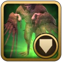 Warded Crew Every ally gains 200 maximum health. |
Golem Caller
Calls a Pit Golem that stuns on arrival. Abilities: Blood OfferingPit Golem
| Player level | Option A | Option B |
|---|---|---|
| 4 | Hardened Hide Vey gains 300 maximum health. | Second Retainer A second Pact Archer joins Vey at the start of combat. |
| 6 | Deep Offering Blood Offering heals 50% more and its blessing lasts 8 seconds. | Infernal Boost Every ally deals 8% more damage. |
| 8 | Searing Torment Vey also casts Searing Torment. | Pain Ward Vey takes 15% less damage and gains 20% magic resistance. |
| 10 |  Pit Colossus Pit Golem calls a stronger golem and stuns for 3 seconds. | Warded Crew Every ally gains 200 maximum health. |
 Brugg Ironjaw
Brugg Ironjaw
Barrel Roller
Rolls barrels that soften the enemy and quicken the crew. Abilities:  Shrug It Off
Shrug It Off Barrel Barrage
Barrel Barrage
| Player level | Option A | Option B |
|---|---|---|
| 4 |  Iron Belly Brugg gains 400 maximum health. | 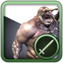 Heavy Hands Brugg deals 20% more damage. |
| 6 |  Unbreakable Shrug It Off lasts 7 seconds. | 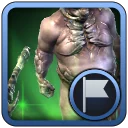 Rounds for All Every ally gains 15 attack speed. |
| 8 | 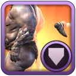 Thick Skin Brugg gains 8 armour and 20% magic resistance. | |
| 10 |  Barrel Avalanche Barrel Barrage hits five enemies and five allies. |  House Rules Every ally gains 5 armour. |
Innkeeper
Buys rounds that blunt the damage the crew takes. Abilities: Shrug It Off Last Round
Last Round
| Player level | Option A | Option B |
|---|---|---|
| 4 | Iron Belly Brugg gains 400 maximum health. | Heavy Hands Brugg deals 20% more damage. |
| 6 | Unbreakable Shrug It Off lasts 7 seconds. | Rounds for All Every ally gains 15 attack speed. |
| 8 | Thick Skin Brugg gains 8 armour and 20% magic resistance. | |
| 10 | 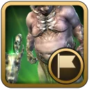 Open Bar Last Round lasts 7 seconds and blocks more damage. | House Rules Every ally gains 5 armour. |
 Pip Quickfingers
Pip Quickfingers
Pickpocket
Robs the enemy at the start of every fight. Abilities:  Toxic Twirl
Toxic Twirl Pickpocket
Pickpocket
| Player level | Option A | Option B |
|---|---|---|
| 4 | 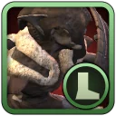 Light Feet Pip attacks 25 faster. |  Padded Vest Pip gains 300 maximum health. |
| 6 |  Venom Cyclone Toxic Twirl deals 50% more damage and adds two stacks of toxin. |  Slippery Crew Every ally gains 10% evasion. |
| 8 |  Smoke Bomb Pip also casts Smoke Bomb. | 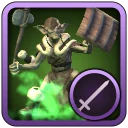 Sharp Darts Pip deals 25% more damage. |
| 10 |  Grand Heist Pickpocket robs two enemies and steals more. | 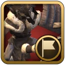 Nimble Crew Every ally deals 8% more damage and attacks 8 faster. |
Brawler
Ropes every enemy into a stunning brawl. Abilities: Toxic Twirl Free-for-All
Free-for-All
| Player level | Option A | Option B |
|---|---|---|
| 4 | Light Feet Pip attacks 25 faster. | Padded Vest Pip gains 300 maximum health. |
| 6 | Venom Cyclone Toxic Twirl deals 50% more damage and adds two stacks of toxin. | Slippery Crew Every ally gains 10% evasion. |
| 8 | Smoke Bomb Pip also casts Smoke Bomb. | Sharp Darts Pip deals 25% more damage. |
| 10 |  Grand Melee Free-for-All deals 50% more damage and stuns for 2.5 seconds. | Nimble Crew Every ally deals 8% more damage and attacks 8 faster. |
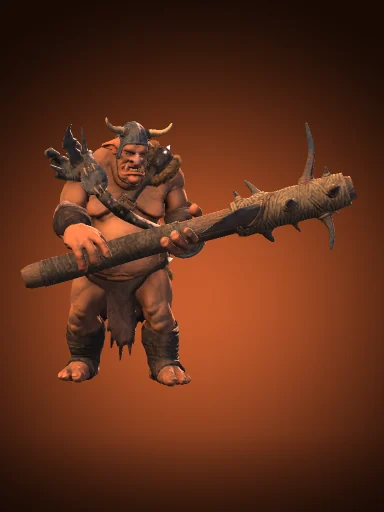
Fizzwick Emberhorn
Bombardier
Calls in bombs on random enemies. Abilities:  Kaboom Bolt
Kaboom Bolt Bomb Brigade
Bomb Brigade
| Player level | Option A | Option B |
|---|---|---|
| 4 | 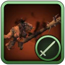 Hot Head Fizzwick deals 20% more damage. | 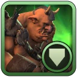 Fireproof Apron Fizzwick gains 30% magic resistance and 200 maximum health. |
| 6 |  Mega Kaboom Kaboom Bolt deals much more damage, still split among its targets. |  Spark Crew Every ally gains 12 attack speed. |
| 8 |  Overcharge Fizzwick also casts Overcharge. | |
| 10 | 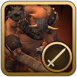 Carpet of Bombs Bomb Brigade drops twelve bombs. |  Fire Insurance Every ally gains 150 maximum health and 3 armour. |
Firestarter
Sends the whole crew into a frenzy. Abilities: Kaboom Bolt Wild Abandon
Wild Abandon
| Player level | Option A | Option B |
|---|---|---|
| 4 | Hot Head Fizzwick deals 20% more damage. | Fireproof Apron Fizzwick gains 30% magic resistance and 200 maximum health. |
| 6 | Mega Kaboom Kaboom Bolt deals much more damage, still split among its targets. | Spark Crew Every ally gains 12 attack speed. |
| 8 | Overcharge Fizzwick also casts Overcharge. | |
| 10 |  Total Chaos Wild Abandon grants 50% more attack speed. | Fire Insurance Every ally gains 150 maximum health and 3 armour. |
Every talent
| Talent | Commander | Player level | Builds | Kind | Description |
|---|---|---|---|---|---|
| Hardened Hide | Vey the Pactbinder | 4 | Thrall Binder and Golem Caller | Commander bonus | Vey gains 300 maximum health. |
| Second Retainer | Vey the Pactbinder | 4 | Thrall Binder and Golem Caller | Triggered effect | A second Pact Archer joins Vey at the start of combat. |
| Deep Offering | Vey the Pactbinder | 6 | Thrall Binder and Golem Caller | Ability upgrade | Blood Offering heals 50% more and its blessing lasts 8 seconds. |
| Infernal Boost | Vey the Pactbinder | 6 | Thrall Binder and Golem Caller | Crew bonus | Every ally deals 8% more damage. |
| Searing Torment | Vey the Pactbinder | 8 | Thrall Binder and Golem Caller | New ability | Vey also casts Searing Torment. |
| Pain Ward | Vey the Pactbinder | 8 | Thrall Binder and Golem Caller | Commander bonus | Vey takes 15% less damage and gains 20% magic resistance. |
| Binding Mark | Vey the Pactbinder | 10 | Thrall Binder | Ability upgrade | Thrall Mark lasts 9 seconds, removes 15 armour and makes the target take 30% more damage. |
| Pit Colossus | Vey the Pactbinder | 10 | Golem Caller | Ability upgrade | Pit Golem calls a stronger golem and stuns for 3 seconds. |
| Warded Crew | Vey the Pactbinder | 10 | Thrall Binder and Golem Caller | Crew bonus | Every ally gains 200 maximum health. |
| Iron Belly | Brugg Ironjaw | 4 | Barrel Roller and Innkeeper | Commander bonus | Brugg gains 400 maximum health. |
| Heavy Hands | Brugg Ironjaw | 4 | Barrel Roller and Innkeeper | Commander bonus | Brugg deals 20% more damage. |
| Unbreakable | Brugg Ironjaw | 6 | Barrel Roller and Innkeeper | Ability upgrade | Shrug It Off lasts 7 seconds. |
| Rounds for All | Brugg Ironjaw | 6 | Barrel Roller and Innkeeper | Crew bonus | Every ally gains 15 attack speed. |
 Haymaker Haymaker | Brugg Ironjaw | 8 | Barrel Roller and Innkeeper | New ability | Brugg also casts Haymaker. |
| Thick Skin | Brugg Ironjaw | 8 | Barrel Roller and Innkeeper | Commander bonus | Brugg gains 8 armour and 20% magic resistance. |
| Barrel Avalanche | Brugg Ironjaw | 10 | Barrel Roller | Ability upgrade | Barrel Barrage hits five enemies and five allies. |
| Open Bar | Brugg Ironjaw | 10 | Innkeeper | Ability upgrade | Last Round lasts 7 seconds and blocks more damage. |
| House Rules | Brugg Ironjaw | 10 | Barrel Roller and Innkeeper | Crew bonus | Every ally gains 5 armour. |
| Light Feet | Pip Quickfingers | 4 | Pickpocket and Brawler | Commander bonus | Pip attacks 25 faster. |
| Padded Vest | Pip Quickfingers | 4 | Pickpocket and Brawler | Commander bonus | Pip gains 300 maximum health. |
| Venom Cyclone | Pip Quickfingers | 6 | Pickpocket and Brawler | Ability upgrade | Toxic Twirl deals 50% more damage and adds two stacks of toxin. |
| Slippery Crew | Pip Quickfingers | 6 | Pickpocket and Brawler | Crew bonus | Every ally gains 10% evasion. |
| Smoke Bomb | Pip Quickfingers | 8 | Pickpocket and Brawler | New ability | Pip also casts Smoke Bomb. |
| Sharp Darts | Pip Quickfingers | 8 | Pickpocket and Brawler | Commander bonus | Pip deals 25% more damage. |
| Grand Heist | Pip Quickfingers | 10 | Pickpocket | Ability upgrade | Pickpocket robs two enemies and steals more. |
| Grand Melee | Pip Quickfingers | 10 | Brawler | Ability upgrade | Free-for-All deals 50% more damage and stuns for 2.5 seconds. |
| Nimble Crew | Pip Quickfingers | 10 | Pickpocket and Brawler | Crew bonus | Every ally deals 8% more damage and attacks 8 faster. |
| Hot Head | Fizzwick Emberhorn | 4 | Bombardier and Firestarter | Commander bonus | Fizzwick deals 20% more damage. |
| Fireproof Apron | Fizzwick Emberhorn | 4 | Bombardier and Firestarter | Commander bonus | Fizzwick gains 30% magic resistance and 200 maximum health. |
| Mega Kaboom | Fizzwick Emberhorn | 6 | Bombardier and Firestarter | Ability upgrade | Kaboom Bolt deals much more damage, still split among its targets. |
| Spark Crew | Fizzwick Emberhorn | 6 | Bombardier and Firestarter | Crew bonus | Every ally gains 12 attack speed. |
| Overcharge | Fizzwick Emberhorn | 8 | Bombardier and Firestarter | New ability | Fizzwick also casts Overcharge. |
 Wildfire Wildfire | Fizzwick Emberhorn | 8 | Bombardier and Firestarter | Ability upgrade | Kindling burns for 6 seconds. |
| Carpet of Bombs | Fizzwick Emberhorn | 10 | Bombardier | Ability upgrade | Bomb Brigade drops twelve bombs. |
| Total Chaos | Fizzwick Emberhorn | 10 | Firestarter | Ability upgrade | Wild Abandon grants 50% more attack speed. |
| Fire Insurance | Fizzwick Emberhorn | 10 | Bombardier and Firestarter | Crew bonus | Every ally gains 150 maximum health and 3 armour. |